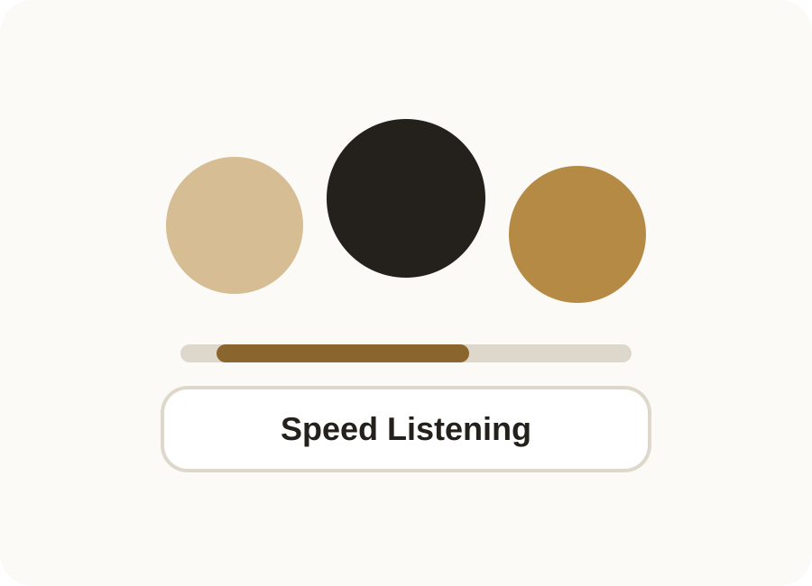
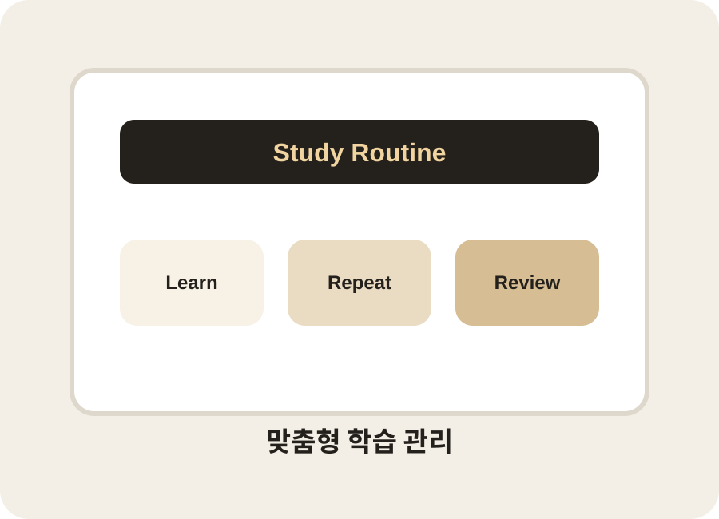
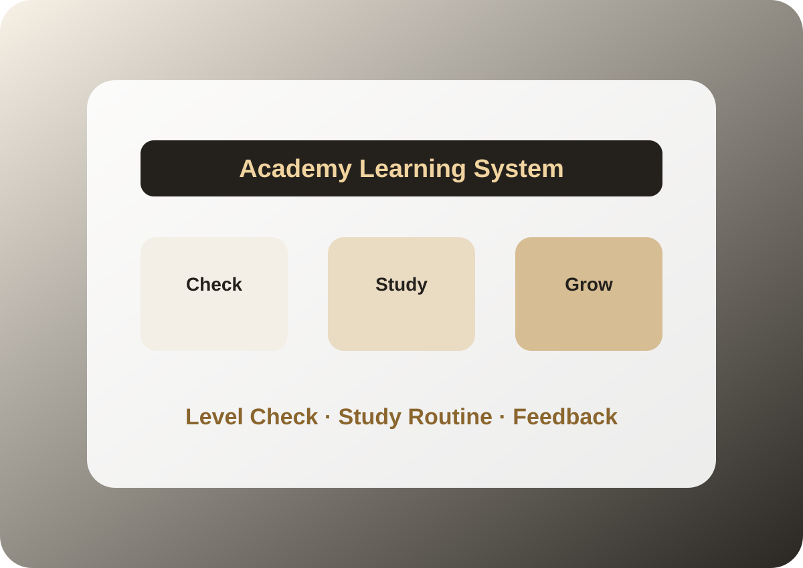

참여 중심 수업
학생이 듣기만 하는 시간이 아니라 직접 말하고 표현하는 시간을 충분히 확보합니다.
Suwon English Academy
연세어학원은 유치부부터 고등부까지 학생의 단계에 맞춰 영어를 언어로 익히고, 학교 수업과 시험까지 연결되도록 균형 있게 지도합니다.
학생별 현재 수준 확인
직접 말하며 익히는 수업
내신과 시험 대비까지 관리
ABOUT
아이들이 처음 한국말을 접하듯 영어도 자연스럽게 듣고 말하는 경험이 중요합니다. 연세어학원은 학생이 직접 말하고 참여하는 시간을 늘려 영어에 대한 거리감을 줄입니다.
회화 중심의 접근에서 읽기, 쓰기, 학교 내신, 시험 대비까지 이어지도록 학습 단계를 정리해 학부모님이 수업 방향을 이해하기 쉽게 안내합니다.
STRENGTHS
학생이 듣기만 하는 시간이 아니라 직접 말하고 표현하는 시간을 충분히 확보합니다.
유치부, 초등부, 중등부, 고등부의 목표와 수준에 맞춰 필요한 학습을 체계적으로 구성합니다.
기본 회화와 독해, 쓰기 능력을 바탕으로 내신과 시험 대비까지 연결해 관리합니다.
PROGRAMS

영어와 친해지는 첫 단계
노래, 그림, 말하기 활동을 통해 영어 소리에 익숙해지고 자연스럽게 표현하는 경험을 쌓습니다.

읽기와 말하기의 균형
기초 어휘와 문장 구조를 다지며 듣기, 말하기, 읽기, 쓰기를 균형 있게 확장합니다.

내신 대비와 실력 정리
학교별 수업 흐름을 반영해 문법, 독해, 어휘, 서술형 대비를 차분하게 관리합니다.
시험을 위한 정확한 학습
내신과 모의고사에 필요한 독해력, 어휘력, 문제 해결 전략을 목표에 맞춰 훈련합니다.
WHY YONSEI
학생이 지금 무엇을 배우고 왜 필요한지 알 수 있도록 수업 흐름을 정리합니다. 깔끔한 기준과 반복 가능한 학습 습관으로 영어 실력을 꾸준히 쌓아갑니다.
소수 정원으로 참여도 높은 수업
말하기에서 읽기와 쓰기까지 연결
학교 내신과 시험 대비 관리
유치부부터 고등부까지 단계별 과정
수원 정자동 연세어학원
유치부 · 초등부 · 중등부 · 고등부